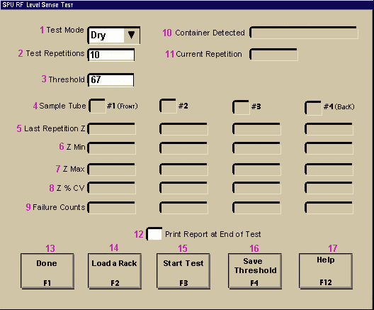

Performing Sample Pipettor Level Sense Test
This procedure describes how to perform an RF level sense test for samples loaded on the SPU.
- Replacing wash tower nozzle—Perform Dry Test
- QNS or level sense errors occur—Perform West Test
- False level sense occurs—Perform Wet and Dry Test
- Sample pipettor has a major component replaced—Perform Wet and Dry Test
- LAS sample pipettor is installed—Perform Wet and Dry Test
The sample pipettor RF level sense test can be performed at two locations:
- SPU—For sample containers loaded on the SPU.
- LAS—For sample containers loaded on the LAS track, only available on instruments with the LAS sample pipettor.
Note: Refer to the Tests: Performing LAS RF Level Sense Test procedure.
Caution: Never use a gel tube for any Dry Test because the sample probe can penetrate the gel.
These terms are related to level sense:
- QNS—Quantity not sufficient (fluid level too low in container).
- Lower threshold—The point at which fluid triggers the level sense.
- Z-step range—The window of steps necessary to reach level sense. The range should not vary for the Dry Test. For the Wet Test, the range does vary.
| Test | Specifications |
|---|---|
|
Wet |
|
|
Dry |
|

| Reference | Name | Description |
|---|---|---|
| 1 | Test Mode | Test selection:
|
| 2 | Test Repetitions | Number of tests to be performed on each sample cup. |
| 3 | Threshold | Sensitivity of level sensing. Do not change from the default threshold of 67 unless recommended by STS. |
| 4 | Sample Tube | Number of sample containers (one to four)automatically selected after the rack is on-board. |
| 5 | Last Repetition Z | Lowest vertical step count from the most recent repetition. |
| 6 | Z Max | Maximum number of vertical steps that the probe moved down during a test. |
| 7 | Z Min | Minimum number of vertical steps that the probe moved down during a test. |
| 8 | Z %CV | Variability in number of steps required to reach:
|
| 9 | Failure Counts | Total number of failed test replicates. |
| 10 | Container Detected | Sample container type specified by on-board rack. |
| 11 | Current Repetition | Number of current in progress test repetition. |
| 12 | Print Report at End of Test | Optional check box to print results after test completion. |
| 13 | Done | Exits Level Sense Test screen. |
| 14 | Load a Rack | Load racks now. |
| 15 | Start Test | Starts the Level Sense Test. |
| 16 | Save Threshold | Do not use this option. |
| 17 | Help | View Help topics available for the test. |
-
Prepare the sample pipettor.
- Make sure that the sample pipettor probe is not bent or damaged.
- Verify the alignment of the sample pipettor to the wash tower.
-
Perform an RF Level Sense Test on the sample pipettor with samples loaded from the SPU.